№8 МКТ и молекулярная физика
Разборы
№8. МКТ и термодинамика: теплота, работа, КПД
Три темы под одной обложкой: первый закон термодинамики (работа, теплота, внутренняя энергия), теплоёмкость и фазовые переходы (плавление, парообразование — обычно по графику), и КПД тепловых машин. Формулы здесь простые, но их несколько, и главная задача — сразу понять, какая именно тут нужна.
Работа, теплота, внутренняя энергия
Пример 1) (Решу ЕГЭ №46117 — Статград, тренировочная работа 02.12.2025)
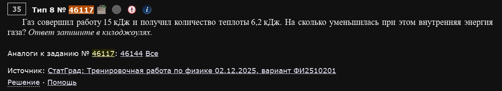
Газ совершил работу 15 кДж и получил количество теплоты 6,2 кДж. На сколько уменьшилась при этом внутренняя энергия газа?
Прямая подстановка в первый закон термодинамики:
Знак минус означает, что энергия именно уменьшилась.
Ответ: на 8,8 кДж.
Пример 2) (Решу ЕГЭ №42785 — Статград, тренировочная работа 18.04.2025)
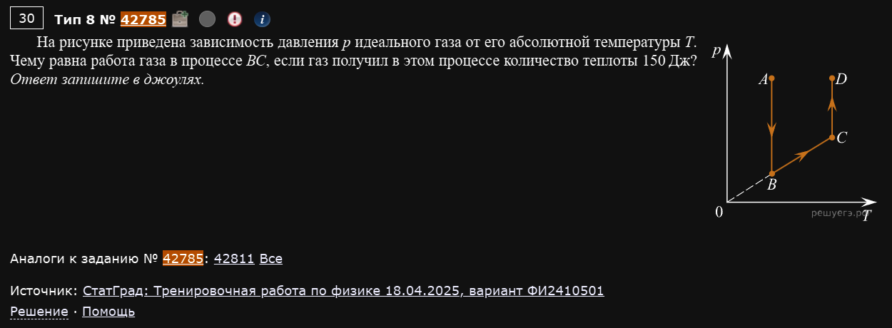
На рисунке приведена зависимость давления p идеального газа от его абсолютной температуры T. Чему равна работа газа в процессе BC, если газ получил в этом процессе количество теплоты 150 Дж?
Ловушка сидит в самом графике: раз давление растёт прямо пропорционально температуре (, прямая линия через начало координат) — это верный признак того, что объём газа не меняется, то есть процесс изохорный.
А при изохорном процессе газ вообще не совершает работы (нет изменения объёма — нечему толкать поршень):
Данная теплота (150 Дж) тут просто отвлекающая деталь.
Ответ: 0 Дж.
Не путайте оси графика с самим процессом
Если график дан не в привычных осях p-V, определите сначала, какой это процесс (изохорный, изобарный, изотермический), и только потом решайте, нужна ли вообще формула для работы.
Пример 3) (Решу ЕГЭ №41137 — Статград, тренировочная работа 23.01.2025)
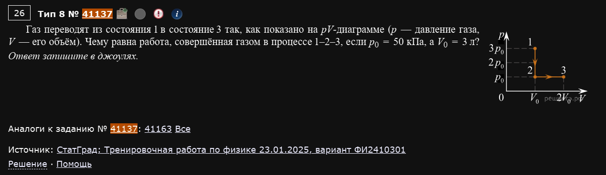
Газ переводят из состояния 1 в состояние 3 (график в осях p-V), причём участок 1-2 — изохорный, а участок 2-3 — изобарный. Дано: p₀ = 50 кПа, V₀ = 3 л (эти величины задают масштаб графика). Чему равна работа, совершённая газом в процессе 1-2-3?
На изохорном участке 1-2 работа равна нулю (см. предыдущий пример). Вся работа получается на изобарном участке 2-3:
Ответ: 150 Дж.
Разбивайте цикл на простые куски
Если процесс состоит из нескольких участков — считайте работу на каждом отдельно (используя, что изохора даёт 0), а потом просто складывайте.
Пример 4) (Решу ЕГЭ №26720 — Демонстрационная версия ЕГЭ-2022)
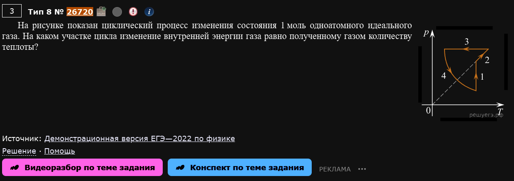
На рисунке показан циклический процесс изменения состояния 1 моль одноатомного идеального газа. На каком участке цикла изменение внутренней энергии газа равно полученному газом количеству теплоты?
Из первого закона термодинамики видно: выполняется ровно тогда, когда работа — то есть на изохорном участке (объём не меняется).
Смотрим на график: один из участков — вертикальный отрезок в осях p-V (объём постоянен). Именно на нём выполняется нужное условие.
Ответ: участок 2 (изохорный).
ΔU = Q — это не общий случай, а частный
Такое равенство выполняется ТОЛЬКО там, где работа равна нулю (изохора). На любом другом участке (где объём меняется) часть теплоты обязательно уходит на работу или, наоборот, добавляется за счёт работы, совершённой над газом.
Теплоёмкость и фазовые переходы
Пример 5) (Решу ЕГЭ №35223 — ЕГЭ по физике 05.06.2023, разные задачи)
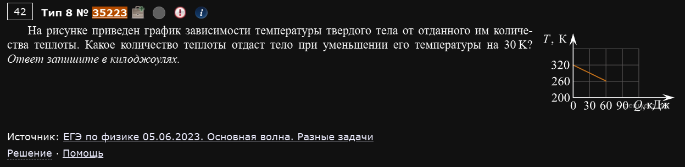
На рисунке приведён график зависимости температуры твёрдого тела от отданного им количества теплоты. Какое количество теплоты отдаст тело при уменьшении его температуры на 30 K?
Количество теплоты при нагреве/охлаждении твёрдого тела прямо пропорционально изменению температуры: . Из графика видно, что охлаждению на 60 K соответствует 60 кДж отданной теплоты. Раз зависимость линейная, для 30 K (вдвое меньше) потребуется вдвое меньше теплоты:
Ответ: 30 кДж.
Пример 6) (Решу ЕГЭ №43190 — ЕГЭ по физике 02.06.2025, Юг)
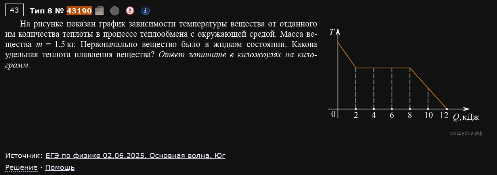
На рисунке показан график зависимости температуры вещества от отданного им количества теплоты в процессе теплообмена с окружающей средой. Масса вещества m = 1,5 кг. Первоначально вещество было в жидком состоянии. Какова удельная теплота плавления вещества?
Пока вещество кристаллизуется (переходит из жидкого состояния в твёрдое), температура на графике держится постоянной — это и есть “участок отвердевания”. По графику видно, что за это время выделилось 6 кДж теплоты.
Ответ: 4 кДж/кг.
Пример 7) (Решу ЕГЭ №17655 — ЕГЭ по физике 2020, досрочная волна, вариант 2)
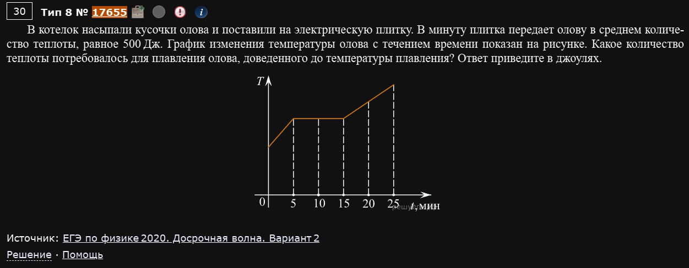
В котелок насыпали кусочки олова и поставили на электрическую плитку. В минуту плитка передаёт олову в среднем количество теплоты, равное 500 Дж. График изменения температуры олова с течением времени показан на рисунке. Какое количество теплоты потребовалось для плавления олова, доведённого до температуры плавления?
Здесь теплоту с графика напрямую не считывают — считывают ВРЕМЯ, пока длится плавление (горизонтальный участок графика), а дальше домножают на известную мощность нагрева. По графику плавление длилось 10 минут:
Ответ: 5000 Дж.
Три способа читать один и тот же график
Сравните примеры 5, 6 и 7: иногда теплота читается с графика напрямую (ось Q), иногда нужно домножить время на мощность нагревателя. Всегда смотрите, что подписано на осях, прежде чем считать.
Пример 8) (Решу ЕГЭ №29982 — Демонстрационная версия ЕГЭ-2023)
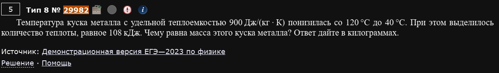
Температура куска металла с удельной теплоёмкостью 900 Дж/(кг·К) понизилась со 120 °C до 40 °C. При этом выделилось количество теплоты, равное 108 кДж. Чему равна масса этого куска металла?
Прямая подстановка в формулу теплоёмкости (для перепада температур можно использовать и Цельсии — разница одна и та же что в °C, что в кельвинах):
Ответ: 1,5 кг.
Разность температур — Цельсии не нужно переводить
В отличие от газовых законов (где важна именно абсолютная температура), для разности температур неважно, в чём считать — в градусах Цельсия или в кельвинах, потому что величина “шага” одна и та же (1 °C = 1 К). Переводить в кельвины обязательно только там, где температура стоит “сама по себе”, а не как разность.
КПД тепловых машин
Пример 9) (Решу ЕГЭ №25363 — ЕГЭ по физике 11.06.2021, Москва)
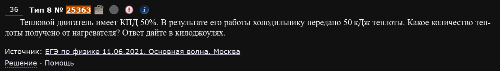
Тепловой двигатель имеет КПД 50%. В результате его работы холодильнику передано 50 кДж теплоты. Какое количество теплоты получено от нагревателя?
Ответ: 100 кДж.
Пример 10) (Решу ЕГЭ №35169 — ЕГЭ по физике 05.06.2023, Урал + Дальний Восток, Центр)
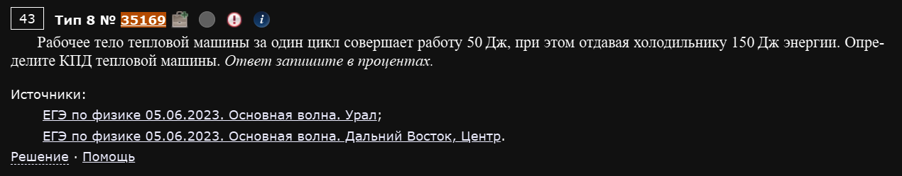
Рабочее тело тепловой машины за один цикл совершает работу 50 Дж, при этом отдавая холодильнику 150 Дж энергии. Определите КПД тепловой машины.
Сначала находим, сколько теплоты пришло от нагревателя (по закону сохранения энергии — работа плюс то, что “ушло” в холодильник):
Ответ: 25%.
Пример 11) (Решу ЕГЭ №38517 — ЕГЭ по физике 04.06.2024, Центр)
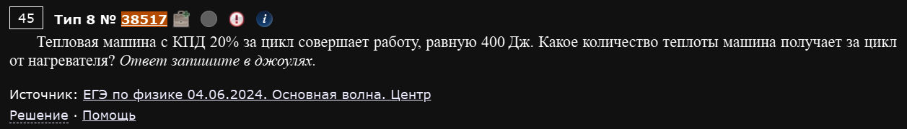
Тепловая машина с КПД 20% за цикл совершает работу, равную 400 Дж. Какое количество теплоты машина получает за цикл от нагревателя?
Ответ: 2000 Дж.
Одна формула, три способа спросить
Примеры 9-11 — это буквально одна и та же формула КПД , просто каждый раз просят найти другую из трёх величин (A, Qн или Qх). Держите эту формулу под рукой и просто выражайте нужное.
Пример 12) (Решу ЕГЭ №50739 — ЕГЭ-2026, основная волна 11.06.2026, Центр)
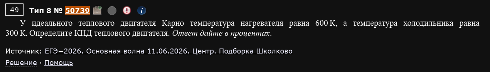
У идеального теплового двигателя Карно температура нагревателя равна 600 К, а температура холодильника равна 300 К. Определите КПД теплового двигателя.
Отдельная формула для ИДЕАЛЬНОГО (максимально возможного) двигателя, работающего по циклу Карно — здесь КПД зависит не от количеств теплоты, а напрямую от температур нагревателя и холодильника:
Ответ: 50%.
Только для цикла Карно, и только в кельвинах
Формула работает исключительно для идеальной (максимально эффективной) машины Карно — это теоретический предел КПД для данных температур. Для произвольной реальной машины нужно возвращаться к формуле через теплоты (примеры 9-11). И, как всегда с абсолютной температурой, — только кельвины, не забудьте перевести из °C.